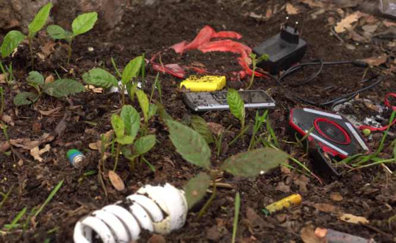
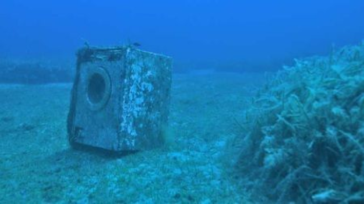

Totale: 90.054.210 kg
Quando i RAEE vengono abbandonati nell'ambiente o smaltiti in modo scorretto,
il terreno è tra gli elementi più colpiti. All'interno di molti dispositivi
elettronici sono presenti sostanze tossiche come piombo,
mercurio, cadmio ed altri metalli pesanti che, con il passare del tempo,
possono fuoriuscire e infiltrarsi nel suolo.
Questo processo altera l'equilibrio naturale del terreno,
riducendone la fertilità e compromettendo la crescita delle
piante. Le sostanze tossiche possono raggiungere le
falde acquifere sotterranee, contaminando
l'acqua utilizzata da animali, agricoltura e persone.

Quando i RAEE vengono dispersi nei fiumi o nei mari, possono rilasciare sostanze tossiche e piccoli frammenti inquinanti molto dannosi per l'ambiente acquatico. Pesci, tartarughe e altri animali marini rischiano di ingerire queste particelle, subendo gravi conseguenze per la loro salute e per l'equilibrio dell'ecosistema. Le sostanze chimiche possono accumularsi nell'acqua e nella catena alimentare, arrivando indirettamente anche all'uomo.

Quando i RAEE non vengono smaltiti correttamente, possono avere
effetti diretti e indiretti anche sulla
salute dell'uomo. L'esposizione prolungata a queste
sostanze può causare problemi al sistema nervoso, ai reni e all'apparato
respiratorio, oltre ad aumentare i rischi nel
lungo periodo.
Anche chi lavora nello smaltimento informale
dei rifiuti elettronici è spesso esposto a condizioni pericolose, senza
adeguate protezioni. Per questo una gestione corretta del RAEE è
fondamentale per tutelare la salute delle persone.